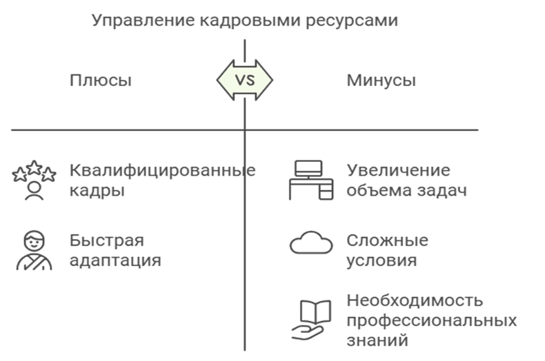
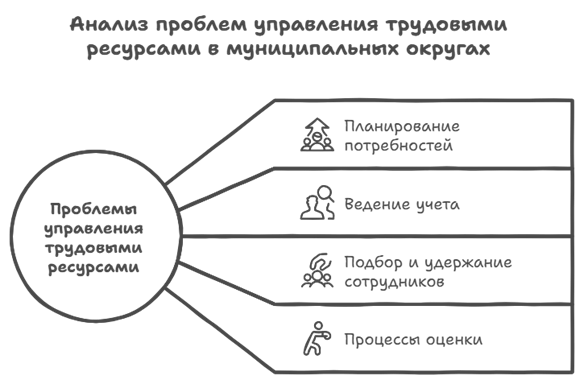

Эффективное управление кадровыми ресурсами в органах местного самоуправления играет ключевую роль в обеспечении стабильного функционирования и развития муниципального округа. Кадры, обладающие необходимыми знаниями, навыками и компетенциями, являются основой для реализации социально-экономических программ, повышения качества предоставляемых муниципальных услуг и решения актуальных задач местного значения.
Современные условия функционирования органов муниципальной власти характеризуются следующими вызовами:
Рост объема и сложности управленческих задач. Сложные социально-экономические условия требуют оперативных и взвешенных решений, что невозможно без квалифицированных кадров.

Плюсы и минусы управления кадровыми ресурсами
Изменение законодательства и нормативно-правовой базы. Постоянные изменения в правовом регулировании муниципального управления требуют от сотрудников высокой гибкости и способности к адаптации.
Дефицит квалифицированных кадров. Конкуренция на рынке труда и недостаток специалистов с необходимыми компетенциями создают дополнительные сложности в обеспечении органов муниципального управления квалифицированным персоналом.
Необходимость повышения прозрачности и эффективности управления. Современные граждане и государственные органы требуют от муниципалитетов прозрачности в принятии решений и эффективного расходования бюджетных средств.
Вместе с тем, традиционные методы управления кадрами, основанные на ручной обработке данных и бумажной документации, не способны обеспечить необходимую скорость, точность и эффективность работы. Это приводит к ряду проблем:
Затрудненное планирование кадровых потребностей и управление трудовыми ресурсами.
Неэффективный учет и анализ кадрового состава, что затрудняет выявление сильных и слабых сторон персонала.
Сложности в подборе, адаптации и удержании сотрудников, особенно на ключевые должности.
Низкая эффективность процессов оценки и повышения квалификации персонала, что приводит к несоответствию кадров текущим и перспективным потребностям муниципального округа.
Все вышеуказанные проблемы свидетельствуют о необходимости разработки и внедрения современной системы управления кадровым обеспечением, основанной на автоматизации процессов управления, интеграции различных информационных потоков и использовании алгоритмической базы для принятия обоснованных управленческих решений.
Актуальность проблемы разработки структуры и алгоритмической базы системы управления кадровым обеспечением муниципального округа заключается в следующем:
Оптимизация процессов управления персоналом. Современная система управления позволит автоматизировать рутинные операции, повысить прозрачность кадровых процессов и минимизировать вероятность ошибок.
Повышение качества кадровых решений. Автоматизированная система на основе алгоритмической базы позволит проводить более точный анализ кадрового состава, выявлять внутренние резервы и прогнозировать кадровые потребности.
Снижение временных и финансовых затрат. Автоматизация кадровых процессов способствует сокращению временных и финансовых ресурсов, необходимых для управления персоналом, за счет повышения эффективности работы кадровых служб.
Улучшение взаимодействия между подразделениями. Интеграция информационных систем обеспечивает оперативный обмен данными между различными отделами, что способствует повышению координации и согласованности действий.

Проблемы управления трудовыми ресурсами
Таким образом, создание эффективной структуры и алгоритмической базы системы управления кадровым обеспечением муниципального округа является неотъемлемой частью повышения эффективности работы органов местного самоуправления. Разработка и внедрение такой системы позволит не только улучшить кадровое обеспечение, но и повысить уровень доверия граждан к деятельности муниципальной власти, что особенно актуально в условиях растущих требований к качеству управления на местном уровне.
Теоретические основы кадрового обеспечения в органах муниципального управления
Понятие муниципальной службы, должности и служащего
Муниципальная служба — это профессиональная деятельность на должностях, предусмотренных уставом муниципального образования, осуществляемая на постоянной основе по трудовому договору. Муниципальная служба обеспечивает исполнение функций органов местного самоуправления (МСУ), действующих в представительных, исполнительных и других структурах.
Правовая база муниципальной службы:
Федеральный закон № 131-ФЗ от 06.10.2003 «Об общих принципах организации МСУ в Российской Федерации».
Федеральный закон № 25-ФЗ от 02.03.2007 «О муниципальной службе в Российской Федерации».
Основные принципы муниципальной службы:
приоритет прав и свобод человека и гражданина;
равный доступ граждан, владеющих государственным языком Российской Федерации, к муниципальной службе и равные условия ее прохождения независимо от пола, расы, национальности, происхождения, имущественного и должностного положения, места жительства, отношения к религии, убеждений, принадлежности к общественным объединениям, а также от других обстоятельств, не связанных с профессиональными и деловыми качествами муниципального служащего;
профессионализм и компетентность муниципальных служащих;
стабильность муниципальной службы;
доступность информации о деятельности муниципальных служащих;
взаимодействие с общественными объединениями и гражданами;
единство основных требований к муниципальной службе, а также учет исторических и иных местных традиций при прохождении муниципальной службы;
правовая и социальная защищенность муниципальных служащих;
ответственность муниципальных служащих за неисполнение или ненадлежащее исполнение своих должностных обязанностей;
внепартийность муниципальной службы.
Муниципальная должность
Муниципальная должность закрепляется уставом муниципального образования и предполагает выполнение полномочий по вопросам местного значения. Существует два типа должностей:
Выборные — депутаты, главы муниципальных образований.
Назначаемые — должности муниципальной службы, заполняемые на основе трудового договора.
Классификация муниципальных должностей:
По уровню квалификации: высшие, главные, ведущие, старшие и младшие.
По выполняемым функциям:
Руководящие должности — глава администрации, начальники отделов.
Должности специалистов — консультанты, ведущие специалисты.
Муниципальный служащий
Муниципальный служащий — гражданин РФ, работающий на постоянной основе на муниципальной должности и получающий заработную плату из местного бюджета.
Основные права муниципального служащего:
ознакомление с документами, устанавливающими его права и обязанности по замещаемой должности муниципальной службы, критериями оценки качества исполнения должностных обязанностей и условиями продвижения по службе;
Получение необходимых условий для выполнения должностных обязанностей;
Понятие муниципальной службы, должности и служащего
Муниципальная служба — это профессиональная деятельность на должностях, предусмотренных уставом муниципального образования, осуществляемая на постоянной основе по трудовому договору.
Особенности анализа кадрового обеспечения органов муниципального управления
Анализ кадрового обеспечения в органах муниципального управления представляет собой ключевой элемент системы управления муниципальными кадрами.
Цели анализа кадрового обеспечения органов муниципального управления
Аналитическая работа в области кадрового обеспечения органов местного самоуправления направлена на достижение двух ключевых целей:
Оценка текущего состояния кадрового состава — определение количественных и качественных характеристик муниципальных служащих, их соответствия занимаемым должностям и уровню профессиональной подготовки.
2. Отбор кандидатов на замещение вакантных должностей — формирование кадрового резерва и обеспечение эффективного заполнения вакансий в системе муниципальной службы.
3. Методы и подходы к автоматизации кадрового обеспечения муниципального округа
Автоматизация кадрового обеспечения муниципального округа представляет собой процесс внедрения информационных технологий и программных средств для оптимизации управления персоналом, обеспечения эффективного функционирования кадровых процессов и повышения качества принимаемых управленческих решений.
Автоматизация кадровой системы муниципального округа необходима для решения ряда ключевых задач:
Снижение временных затрат на рутинные операции, такие как учет, хранение и обработка данных о персонале.
Повышение точности и надежности информации о кадровом составе.
Обеспечение оперативного доступа к информации о сотрудниках для принятия обоснованных управленческих решений.
Оптимизация процессов подбора, адаптации и оценки эффективности персонала.
<
Методы автоматизации
Методы автоматизации включают использование информационных систем для учета и анализа кадровых данных.
Использование информационных систем управления персоналом (HRIS)
Одним из основных методов автоматизации является внедрение HRIS (Human Resource Information System). Эти системы позволяют централизованно хранить информацию о сотрудниках, автоматизировать процессы кадрового учета, расчета заработной платы, управления трудовыми договорами и отпускными графиками. Примеры таких систем:
1С: Зарплата и Кадры
SAP HR
Oracle PeopleSoft
2. Внедрение систем электронного документооборота
Электронный документооборот (ЭДО) позволяет отказаться от бумажных документов и перейти к их цифровым аналогам. Это упрощает процесс оформления кадровых документов, повышает прозрачность и снижает риск ошибок при обработке данных.
3. Использование облачных технологий
Облачные технологии обеспечивают доступ к кадровой информации из любой точки при наличии подключения к интернету. Это особенно актуально для муниципальных округов, где требуется координация работы различных отделов и служб, территориально удаленных друг от друга.
4. Автоматизация процессов подбора и оценки персонала
Для оптимизации подбора кадров используются специализированные программы и платформы, которые позволяют автоматизировать поиск, анализ резюме и первичный отбор кандидатов. Для оценки эффективности работы сотрудников применяются системы управления ключевыми показателями (KPI) и автоматизированные системы оценки компетенций.
Подходы к автоматизации
Подходы к автоматизации кадрового обеспечения включают интеграцию с другими муниципальными платформами и использование машинного обучения для прогнозирования кадровых потребностей.
Комплексный подход
Комплексный подход подразумевает автоматизацию всех ключевых кадровых процессов, включая учет, подбор, обучение, развитие и оценку персонала. Это позволяет создать единую информационную систему, которая обеспечивает взаимодействие всех подразделений муниципального округа.
Модульный подход
Модульный подход предусматривает внедрение автоматизированных систем поэтапно, с учетом приоритетных задач. Например, на первом этапе может быть автоматизирован кадровый учет, на втором — подбор персонала, а на третьем — управление обучением и развитием сотрудников.
Интеграционный подход
Интеграционный подход предполагает объединение существующих информационных систем и приложений в единую платформу для обеспечения взаимодействия между различными подсистемами. Это позволяет сохранить инвестиции в ранее внедренные решения и минимизировать затраты на автоматизацию.
Таким образом, выбор методов и подходов к автоматизации кадрового обеспечения муниципального округа должен быть основан на анализе текущего состояния системы управления персоналом, определении приоритетных задач и доступных ресурсов. Оптимальная автоматизация позволяет не только повысить эффективность работы кадровых служб, но и улучшить качество муниципального управления в целом.
4. Моделирование процессов кадрового управления: системный и функциональный подходы
Эффективное управление кадровым обеспечением муниципального округа требует тщательного моделирования процессов управления персоналом с целью оптимизации их структуры и повышения эффективности. В этом контексте системный и функциональный подходы являются одними из наиболее популярных методов анализа и моделирования кадровых процессов.
Системный подход к моделированию процессов управления кадрами
Системный подход рассматривает кадровое управление как комплекс взаимосвязанных элементов, взаимодействующих между собой для достижения общей цели — обеспечения муниципального округа квалифицированными кадрами.
Основные принципы системного подхода:
Целостность — рассмотрение кадровой системы как единого целого, где изменение одного элемента влияет на работу всей системы.
Иерархичность — разделение системы на уровни управления (стратегический, тактический и операционный).
Взаимосвязанность элементов — анализ взаимосвязей между подразделениями и процессами, участвующими в управлении персоналом.
Пример применения системного подхода:
Для обеспечения эффективного кадрового планирования необходимо учитывать взаимосвязь между процессами подбора, адаптации и оценки персонала. Системный подход позволяет выявить «узкие места» в работе кадровой службы и предложить меры по их устранению.
Функциональный подход к моделированию процессов управления кадрами
Функциональный подход фокусируется на изучении функций и задач, выполняемых различными подразделениями кадровой службы, с целью оптимизации их выполнения и повышения эффективности.
Основные принципы функционального подхода:
Разделение функций — выделение и детализация отдельных функций управления персоналом (например, подбор, обучение, мотивация, оценка).
Оптимизация процессов — анализ текущего состояния выполнения функций и предложение мер по их улучшению.
Оценка эффективности функций — разработка критериев и показателей для оценки эффективности выполнения каждой функции.
Пример применения функционального подхода:
Для оптимизации функции подбора персонала можно использовать специализированное программное обеспечение, которое автоматизирует анализ резюме и проведение первичных собеседований.
Сравнительный анализ системного и функционального подходов
Критерий
Системный подход
Функциональный подход
Объект анализа
Система управления кадрами в целом
Отдельные функции и процессы
Основная цель
Обеспечение целостности системы
Оптимизация выполнения отдельных функций
Взаимосвязи между элементами
Учитываются
Могут не учитываться
Применение
Для стратегического управления
Для оперативного и тактического управления
Список используемой литературы и источников
Архипова, Н. И. Управление персоналом. Введение в профессию: учебное пособие / Н. И. Архипова, С. В. Назайкинский, О. Л. Седова- 2-е изд. - Москва: Рос. гос. гуманитарн. ун-т, 2019. - 132 с.
Астахов, Ю. В. Кадровые технологии в системе муниципальной службы. Опыт, проблемы, перспективы // Научные ведомости Белгородского государственного университета. – 2016. – No 14. – с. 65-71.
Беликова, И. П. Управление персоналом: учебное пособие / И. П. Беликова. — Ставрополь: СтГАУ, 2014. — 64 с.
Кудайметова Г.И. Система управления персоналом в органах местного самоуправления: организационно-правовой аспект. // Муниципальное управление. – 2016. – № 1 (26)
ISSN 2072-0297 Молодой учёный Ежемесячный научный журнал № 4 (63) / 2014 Покацкий С.А. Проблемы и практика разработки программы развития муниципальных кадров на примере органа местного самоуправления Джидинского района Республики Бурятия..... 871
ISSN 2072-0297 Молодой учёный Ежемесячный научный журнал № 4 (63) / 2014 Журавлёва О.А. Кадровое обеспечение функционирования контрактной системы в России
Глуховская, А. Пульт управления кадрами // Деловая неделя -2011№20
ВЫПУСКНАЯ КВАЛИФИКАЦИОННАЯ РАБОТА «Совершенствование кадрового обеспечения в органах муниципального управления» Русинова Яна Алексеевна
Современные технологии управления персоналом: учебник / А. А. Литвинюк, Л. С. Бабынина, Л. Н. Иванова-Швец [и др.]; под общ. ред. д-ра экон. наук А. А. Литвинюка. — Москва: ИНФРА-М, 2023
Федеральный закон "О муниципальной службе в Российской Федерации" от 02.03.2007 N 25-ФЗ (последняя редакция)